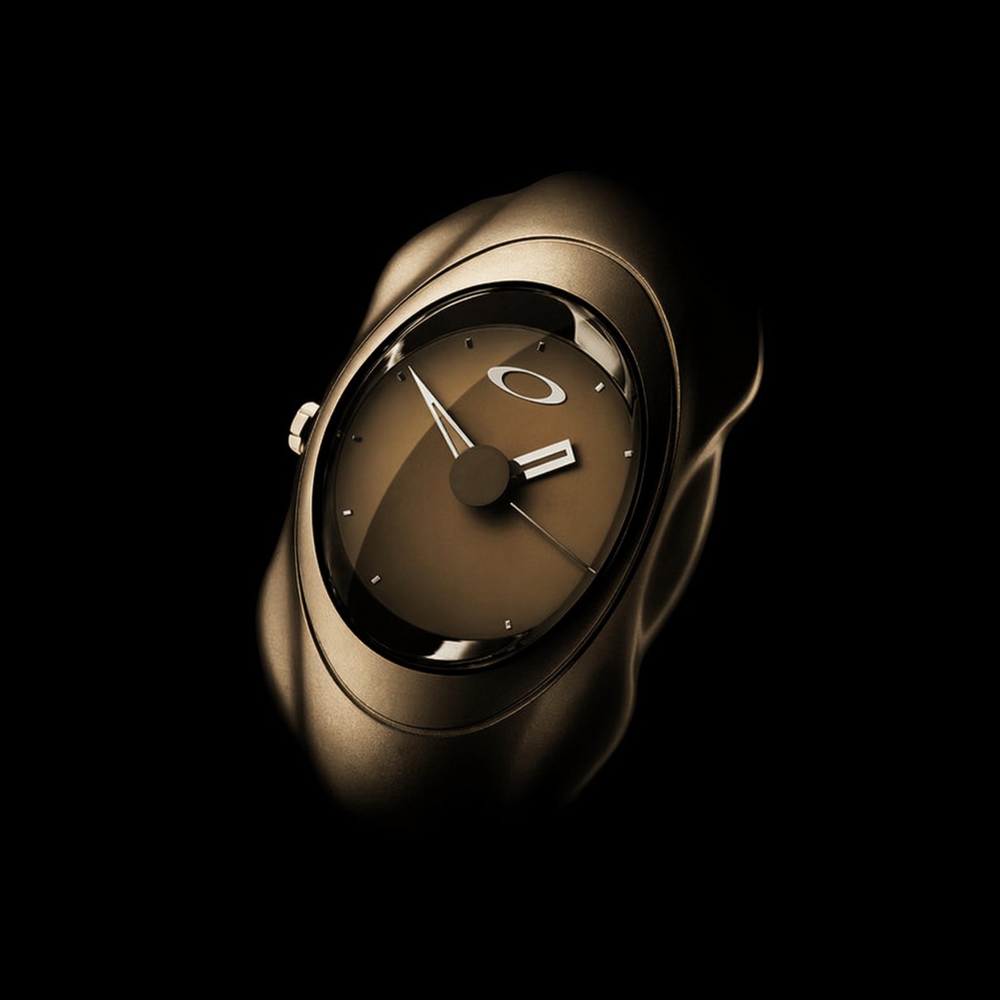
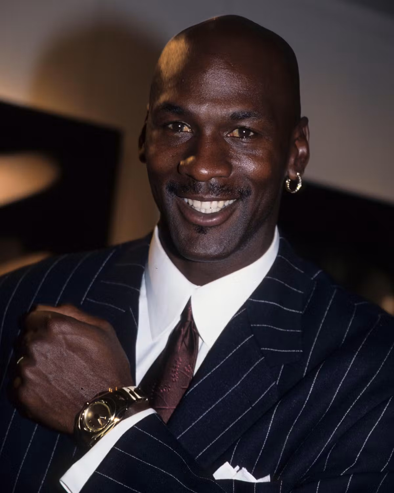
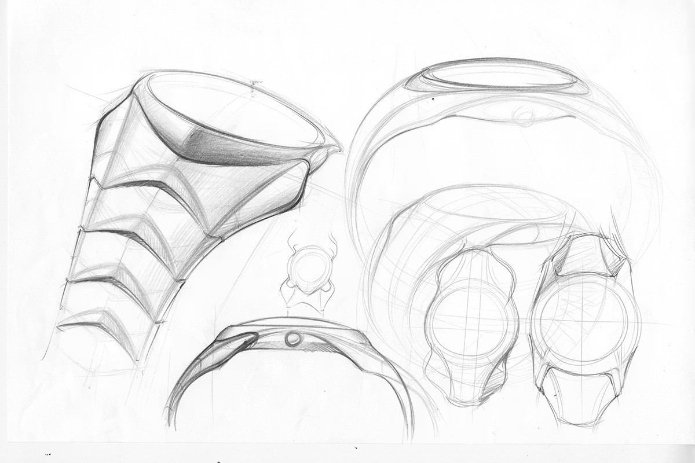

A Mile-
stone.
When Oakley introduced the Time Bomb in 1998, it didn't quietly enter the watch industry, it detonated into it. Here's why it still matters.

Time Bomb — 1998From Detonation
to Icon.
The Time Bomb represented Oakley's decisive expansion into new territory. It wasn't designed to fit into the existing landscape of watchmaking, its sculptural titanium body, unconventional proportions, and experimental engineering made it feel like an object from a different category entirely.
Early reactions reflected the watch's disruptive nature, confusion, curiosity, and a sense that this was something the industry hadn't seen before. It didn't fit traditional expectations, which limited its initial reach.
A rare solid gold version, reportedly valued around $25,000, became closely associated with Michael Jordan, amplifying the watch's presence and exclusivity far beyond the watch world.
The watch found a second life among collectors, appreciated for its uncompromising design and connection to the experimental spirit of the late '90s. What once felt out of place is now recognized as forward thinking.
A Point of View,
Made Wearable.
The Time Bomb became one of Oakley's most recognizable watches because it distilled the brand's late-'90s design language into its purest form. Organic, biomechanical, and futuristic, it translated a bold visual identity into something wearable.
"Define problems, find solutions, and wrap them in art." — Jim Jannard
Every element, from the spine like bracelet to the horseshoe inspired bezel, contributed to a cohesive, almost architectural presence. It didn't just tell time, it expressed a point of view.

Not an Experiment.
A Statement.
With a launch price around $1,500, the Time Bomb positioned itself alongside established luxury watches of the era. It wasn't presented as an entry level experiment, but as a fully realized product competing on equal footing.
The Michael Jordan Connection
The rare solid gold edition became closely associated with Michael Jordan, further amplifying the Time Bomb's presence and exclusivity. This link to one of the most iconic figures of the '90s elevated the watch's cultural status well beyond the watch industry.

Performance
with Rebellion.
Beyond its appearance, the Time Bomb reinforced its identity through engineering. Its Inertial Generator® system, converting motion into electrical energy, aligned with Oakley's focus on functional innovation.
At a time when many watches followed familiar formulas, the Time Bomb approached the category with a different mindset, one that prioritized experimentation over tradition. The result was a piece that felt both technical and rebellious.
Complete Creative
Freedom.
Sculptural Design
The Time Bomb's organic, biomechanical form set it apart from every other watch of its era, a piece of industrial art that happened to tell time.
Unconventional Engineering
Powered by motion, not batteries, the Inertial Generator® gave the watch a technical identity as radical as its visual one.
Cultural Timing
Arriving at the peak of Oakley's late-'90s design era, the Time Bomb captured a specific moment in culture that collectors still chase today.
From Misread to Milestone
What the market didn't immediately understand, collectors came to revere. Its distinctiveness, once a liability, became its defining strength.
"What once felt out of placeOakley Time Bomb — A Milestone
is now recognized as forward-thinking."